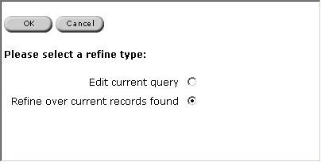
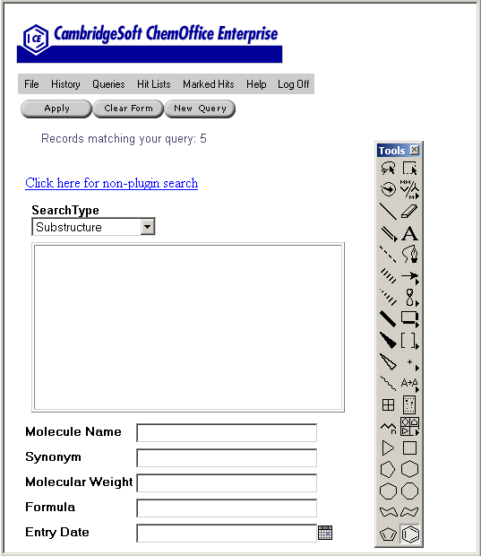

The following screen appears. 
| If you want to... | Click... |
| re-run the original query, and then apply the refinement query. | Edit current query. See Editing Queries. |
| apply the refinement query to the current record set. | Refine over current records found. |
The Refine Query Input Form appears.
